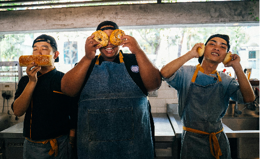

In this project, I leveraged Power BI to improve user engagement and experience by integrating, transforming, and visualizing diverse datasets, including user data and session records.
My efforts focused on analyzing user behavior to understand engagement patterns and preferences.
In this project, I set out to explore what makes unicorn companies—startups valued at $1 billion or more—so unique.
I analyzed their industries, funding histories, geographic distribution, and how long it took them to reach unicorn status.
In this project, I set out to explore what makes unicorn companies—startups valued at $1 billion or more—so unique.
I analyzed their industries, funding histories, geographic distribution, and how long it took them to reach unicorn status.
In this project, I set out to explore what makes unicorn companies—startups valued at $1 billion or more—so unique.
I analyzed their industries, funding histories, geographic distribution, and how long it took them to reach unicorn status.
In this project, I set out to explore what makes unicorn companies—startups valued at $1 billion or more—so unique.
I analyzed their industries, funding histories, geographic distribution, and how long it took them to reach unicorn status.
This research dives into global startup funding trends using data from Crunchbase.
It examines funding patterns across sectors and countries, identifies periods of funding booms and downturns, and highlights notable startups that raised significant funds but eventually failed.
The SmartHome project addresses supply chain and production planning optimization for SmartHome Solutions Inc.
The project identifies inefficiencies such as overproduction, underproduction, terrible customer satisfaction, and poor inventory management.
This project involved a deep dive into analyzing customer lifetime value segmentation at NexaSat, utilizing SQL to uncover actionable insights.
Digital Marketing Analytics to
Optimize E-commerce Ad Spend
The FreshCart Ad Analysis project aims to optimize digital ad spending for the fictional company FreshCart. The project evaluates advertising campaign effectiveness across platforms like YouTube, Twitter, and Google Ads using Power BI
The Predictive Hotel Booking project for Hospitality Haven analyzes hotel booking data to optimize operations, pricing strategies, and customer satisfaction. It focuses on identifying seasonal trends, understanding customer behavior, and benchmarking against competitors.
This project aims to discover the top-performing UK YouTubers for marketing collaborations throughout 2024. As the Head of Marketing, Sharon wants to identify the top YouTubers in the UK based on subscriber count, videos uploaded, and views accumulated. This will help her decide which channels would be best to run marketing campaigns with to generate a good ROI.
The company's management seeks to enhance their understanding of sales performance and identify trends within their sales data from 2016 to 2018. By delving into various dimensions of sales activity, they aim to extract actionable insights to inform strategic decisions and aid expansion

I completed a project that focused on the complexities of sourcing, procurement, and supplier management, helping me understand how these factors impact the quality, cost, and efficiency of a restaurant's operations. Through this project, I honed my skills in data analysis and visualization using Power BI, transforming raw data into actionable insights to support strategic decision-making. The project deepened my understanding of supply chain and supplier performance, knowledge that applies across various industries.
In this project I explored the dynamics of customer preferences, sales trends, and operational performance within a pizza business. Using tools like SQL and Power BI, I transformed raw data into visual insights that informed decision-making around customer satisfaction.
In this project, I used Power BI to improve operational efficiency for a manufacturing company. I was responsible for collecting, transforming, and analyzing data to pinpoint areas for improvement. I created interactive, real-time dashboards and reports, giving decision-makers clear insights that led to actionable improvements. This project highlighted how Power BI can drive meaningful business changes through data-driven analysis.